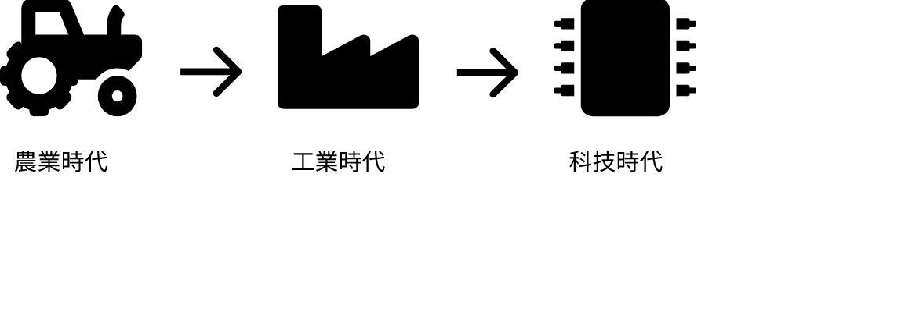

經濟起飛
980年代後，台灣政府開始實施不同的經濟政策，將產業結構從“重工業”轉變為“技術密集型產業”。 技術密集型行業包括光電技術，計算機，計算機集成製造，半導體行業等。 就像以前的加工區一樣，政府為投資者設立了一個專門的區域來建廠。這個特殊的區域稱為“科學園”。 在科技園區內，有許多品牌生產大量半導體產品。 例如，TSMC，UMC，聯發科等。 這些台灣品牌的技術總部都在新竹科學園區內。 據《自由時報》網去年報導，2018年科學園的總收入超過850萬億美元。半導體產業對台灣的GDP貢獻很大。
